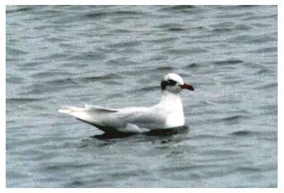

Mediterranean Gull
An unusual but now regular visitor to the reservoir since the first record in 1992.

12/10/92 - Single adult in full winter plumage. (BS)
25/11/93 - Single adult in flock; Remained until 28/11 when it flew at 15:45 & departed south, perhaps to roost on the Devon coast. (BS, DWH)
13/12/96 - Single adult. (BS)
13/10/97 - Single 1st winter bird. (DWH)
20/10/98 - Single adult in full winter plumage, seen at 17:00, bathing with Black-headed Gulls & flew south 10 minutes later. Seen again on 21/10 at 16:30. (DWH)
??/11/98 - Single adult winter. (AJB)
28/11/99 - Single 2nd winter bird. (DWH)
03/10/00 - Single adult winter also on 05/10
03/12/00 - Single adult winter
22/02/01 - Single adult summer plumage also on 25/02
02/03/02 - Single bird (AG)
14/03/04 - Single adult summer
14/07/04 - 2 birds in adult summer and 2nd summer plumage (DWH)
02/10/04 - Single second winter bird
30/01/05 - Single bird
07/02/05 - Single adult summer stayed 2 days
15/02/05 - 3 birds (DWH)
15/02/07 - Single adult winter
31/07/07 - Single in 1st summer plumage
10/10/07 - Single adult winter
28/10/07 - Single adult winter
25/02/08 - Single adult winter
13/03/08 - Single second winter bird
05/12/09 - 2 adult winter birds
2010 - Recorded on 7 dates, mostly single adults in January to March with 2 adults on 01/02 and a first winter bird on 14/02
2011 - Recorded on 8 dates in October and one in December, mainly singles with 2 birds on 07/10/, 10/10 and 16/10
2012 - Recorded on 7 dates in November and January all single adults apart from 2 (adult plus first winter) on 22/01
2013 - Mostly singles recorded on 12 dates, mostly in February, October and December. Notably 1 juvenile on 23/07 and 4 birds 26/10
2014 - Recorded on 7 dates in October to December. Singles apart from 3 on 3/10, 2 on 12/10 and 2 on 5/11
2015 - Recorded on 10 dates over 6 different months. All adults apart from a 1st year bird on 23/08, 24/08 and 31/08
2016 - Mostly singles recorded on 9 dates in 4 different months and covering the plumages of 1st winter, 2nd winter, juvenile and adult. Notable was the juvenile on 20/08 and 4 adults on 04/03
2017 - Just 2 singles on 02/03 and 22/03
2018 - 1 on 15/02, 1 on 21/02, 1 adult on 25/03, 1 adult winter on 26/10 and 1 adult winter on 21/11
2019 - Just 2 single adults on 02/03 and 03/07
2020 - 4 birds on 29/01, 1 on 03/03, 2 on 20/03 and 1 on 18/09
2021 - 1 on 15/01 and 4 birds on 17/01 were the only records
2022 - 1 made a brief visit on 28/01 alongside a small number of Common Gulls
2023 - Singles on 06/02, 20/02 and 25/02 involving at least 2 different adults
2024 - 1 adult in breeding plumage on 28/01
2025 - 2 adults coming into summer plumage on 16/02 (AG) and 1 adult in winter plumage on 25/10 (KGH)